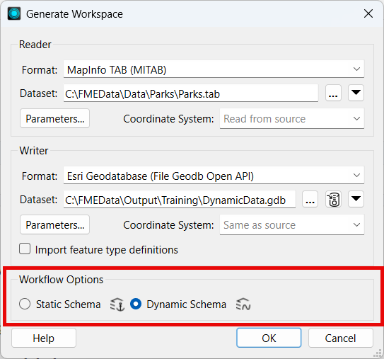
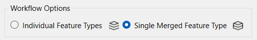
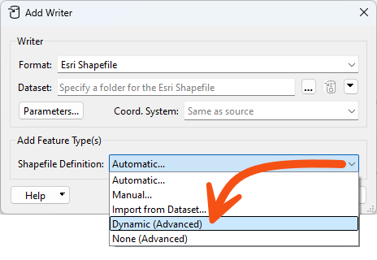
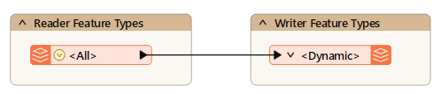
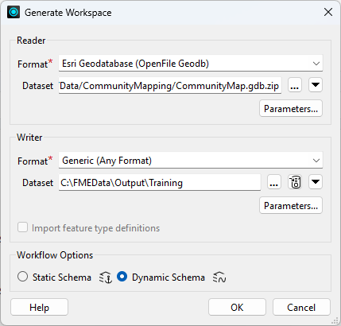
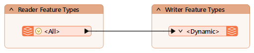
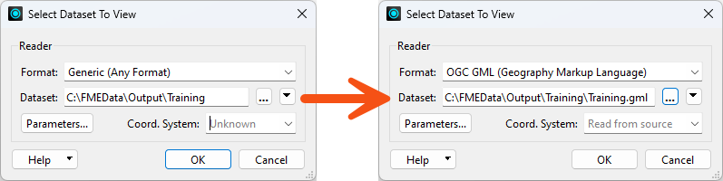
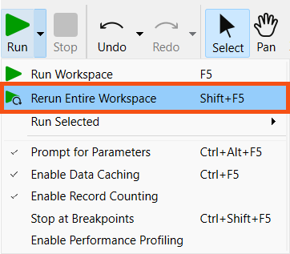
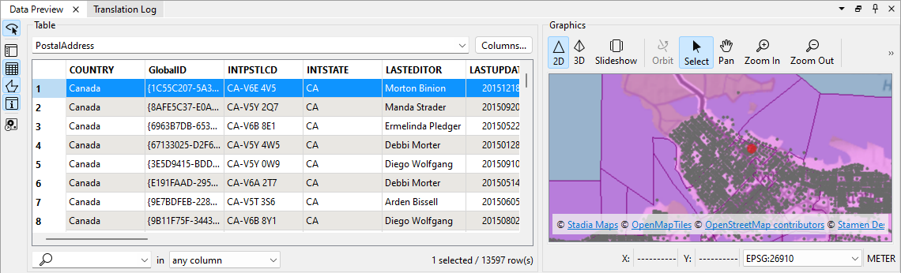

Learning Objectives
After completing this lesson, you’ll be able to:
- Create a dynamic translation by setting Workflow Options in the Generate Workspace dialog.
- Explain the relationship between dynamic reading and merging feature types.
- Explain the difference between Automatic and Dynamic Feature Type Definition Mode on writer feature types.
- Use a dynamic workspace to write any source schema to a new dataset.
Instructions
In this lesson, you will:
- Optional: Watch a demonstration video (it repeats what we cover in live training).
- Scroll down to read the text below.
- Complete the exercise by following the steps.
- Complete the quiz at the end of this lesson.
- Click 'Next' to mark the lesson complete.
Creating a Dynamic Translation
When you create a workspace using the Generate Workspace dialog (Build > Generate Workspace), there are two Workflow Options: Static Schema and Dynamic Schema.

The default option is the static schema, which assumes a fixed schema that FME knows before running the workspace. The Dynamic Schema option creates a schema-less workspace with dynamic readers and writers.
It is, however, possible to create a workspace where only the readers or writers are dynamic.
Dynamic Reader Only
The Add Reader dialog has similar options for static and dynamic; however, in this case, they are labeled to reflect what they do: they create Individual Feature Types or a Single Merged Feature Type:

A dynamic reader is similar to setting the Merge Feature Type option on reader feature types.

Note, however, that if you add an individual feature type and then check Merge Feature Type, that feature type will still use the individual feature type's original schema. If the other feature types have different attributes, they will be read but unexposed in the resulting features.
Dynamic Writer Only
The Add Writer dialog has options that let you define feature types and their attributes. The most commonly used ones are Manual and Automatic. There is also an option that adds a writer in Dynamic mode:

Let's clarify Automatic vs. Dynamic. Automatic attributes take their definition from whatever is connected to them. If the Source Dataset parameter is changed, that change has no effect.
Dynamic attributes are different. If the Source Dataset parameter is changed, the attribute definition comes from whatever source data gets read, regardless of what is connected to it.
What Does a Dynamic Workspace Look Like?
Both dynamic readers and dynamic writers each have a single Feature Type, regardless of the schema of the reader datasets:

Notice that there is only one feature type, regardless of whether the data comprises several layers or tables.
Also, notice that the sole reader Feature Type is named <All> (which provides a clue to what is happening here) and that the sole writer Feature Type is named <Dynamic>.
FME reads all source data through a single feature type when the workspace runs. On the writer side, although there is only one output type, FME dynamically divides the layers back into their component layers, keeping their original attributes and geometry type.
With this workspace, you can switch the source dataset to anything (in the correct format), and the output will be a mirror image. You don't need to worry about unexpected input or unsupported geometry types. Plus, if you used the Generic Reader/Writer, it could read any dataset in any format and create a duplicate output in the format of your choice!
Resources
- Complete workspace
- If your computer has FMEData, the file path is C:\FMEData\Workspaces\AdvancedReadingAndWriting\create-a-basic-dynamic-workspace-complete.fmw
- CommunityMap.gdb.zip
- C:\FMEData\Data\CommunityMapping\CommunityMap.gdb
- Addresses.zip
- C:\FMEData\Data\Addresses\Addresses.gdb
Exercise

Sven built a workspace in an earlier course that lets colleagues translate the community map into a format of their choice. It works, but every output dataset carries all of the source table's attributes, and it only ever handles that one geodatabase. He wants a version that accepts any source geodatabase and reproduces its schema exactly.
In this exercise, you will:
- Generate a dynamic workspace by setting Workflow Options to Dynamic Schema.
- Write any source geodatabase to a chosen format while preserving its original schema.
1) Generate the Workspace
Generate Workspace builds the whole translation in one dialog. The Dynamic Schema option is the part that matters here: it is what lets the workspace carry any source schema through to the output.
- Start FME Workbench 2026.2 or later.
- Select Build > Generate Workspace and configure the following parameters:
- Reader Format: Esri Geodatabase (OpenFile Geodb)
- Reader Dataset: the CommunityMap.gdb.zip download, or C:\FMEData\Data\CommunityMapping\CommunityMap.gdb
- Writer Format: Generic (Any Format)
- Writer Dataset: C:\FMEData\Output\Training
- Writer > Parameters > Output Format: Esri Shapefile
- Workflow Options: Dynamic Schema

2) Inspect the Workspace
A dynamic workspace looks much smaller than a static one, because a single pair of feature types stands in for every table in the source. Recognising that shape is what tells you the translation is genuinely schema-less.
- Confirm there is one reader feature type and one writer feature type.

- Expand the reader feature type using its right-pointing arrow.
- The reader feature type lists its attributes. The writer feature type does not, and is labelled <Dynamic> instead.
- In the Navigator, under User Parameters, confirm that FME created the Feature Types to Read user parameter and the Output Format user parameter.
- These are the same two user parameters you met in Let the User Choose the Output Format. If you want, you can repeat the steps to restrict the user's options for the output format list, but it is not required.
- Leave the SourceDataset_FILEGDB parameter in place. You need it in step 4.
3) Run the Workspace
This first run proves the workspace reproduces the community map faithfully. The output should come back in the format you pick, with the source schema intact.
- Click Run with Prompt for Parameters enabled.
- Select any source tables under Feature Types to Read and set any Output Format.
- Some formats produce nonsensical output if the list has not been restricted. That is expected here.
- Confirm the output is in the format you chose and preserves the original schema.
- Selecting View Written Data opens the Select Dataset to View dialog. Specify the format and dataset to see the data. The Tips at the end of this exercise explain why FME asks.

4) Re-Run with a Different Source
The real test of a dynamic workspace is pointing it at data it has never seen. Swapping the geodatabase without touching the canvas is the whole point of the design.
- Select Rerun Entire Workspace (Shift+F5).
- Run Workspace (F5) reuses cached data and does not prompt for the source File Geodatabase parameter. If that prompt is missing, you used Run Workspace by mistake.

- For the File Geodatabase parameter, enter the Addresses.zip download, or browse to C:\FMEData\Data\Addresses\Addresses.gdb.
- Clear the Feature Types to Read parameter.
- Click Run.
- Inspect the output.
- The workspace wrote the address data instead of the community mapping data. The output feature types, PostalAddress and PostcodeBoundaries, match the source, and so do their attributes.

You have built a workspace that accepts any source geodatabase and reproduces its feature types, attributes and geometry in the output, without defining a single schema on the canvas. Swapping the source dataset is now the only change needed to process different data.
Tips
- Pair a dynamic workspace with a Generic reader and writer and it will read any dataset in any supported format and reproduce it in the format of your choice.
- The reader feature type is named <All> and the writer feature type <Dynamic>. Those names are a quick way to tell at a glance that a workspace is schema-less.
- Selecting View Written Data on a dynamic or generic writer feature type usually opens the Select Dataset to View dialog, because FME does not know the format or path in advance. Specify the format and dataset to view the data. The same happens with a writer feature type fanout, where the output path depends on an attribute value FME only reads at run time.